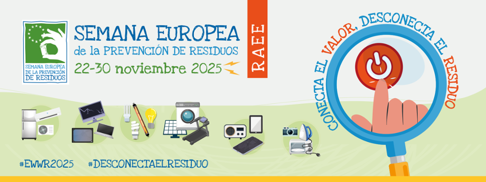

Nuevo modelo de recogida de residuos inteligentes
El Ayuntamiento de Mollet del Vallès ha distribuido más del 90 % de las tarjetas para los contenedores inteligentes, reforzando la recogida selectiva y el control de residuos en toda la ciudad.


El Ayuntamiento de Mollet del Vallès ha distribuido más del 90 % de las tarjetas para los contenedores inteligentes, reforzando la recogida selectiva y el control de residuos en toda la ciudad.
Se ha puesto en marcha la Línea 2 del Bus Urbano, ampliando el transporte público para ofrecer una movilidad más sostenible y conectada, fomentando el uso del transporte colectivo.

Mollet se ha adherido a esta campaña con actividades centradas en la prevención y la reducción de residuos, bajo el lema “Conecta el valor, apaga el residuo”.

Se ha iniciado una campaña de arborización que incluye la incorporación de 200 nuevos árboles en distintos barrios para reforzar el espacio verde urbano.

Mollet cuenta con 80 hectáreas de zonas verdes y más de 14.500 árboles de 194 especies, favoreciendo la biodiversidad y la calidad de vida del municipio.

El Ayuntamiento trabaja para reducir las emisiones de CO₂ y otros gases de efecto invernadero en un 40 % antes de 2030, apostando por eficiencia energética y energías renovables.

La promoción de movilidad suave como el uso de bicicletas, caminatas y transporte urbano sostenible ayuda a reducir la huella ambiental y mejora la calidad de vida.